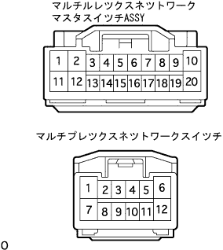

パワーウインドウシステム マスタスイッチによる他席リモート操作ができない(各ドアのスイッチでは操作できる) |
参照）| 手順1 | マルチプレックス ネットワーク マスタ スイッチASSY点検 |
 |
マスタスイッチ点検
マスタスイッチのコネクタを切り離す。
SST（トヨタエレクトリカルテスター）を使用して、車両側コネクタ各端子の電圧および導通を点検する。
| 端子番号 | 項目 | 測定条件 | 基準 |
|---|---|---|---|
| 2（GND）←→ボデーアース | 導通 | 常時 | 導通あり |
| 10（PWR）←→2（GND） | 電圧 | 常時 | 10-14Ｖ |
| 20（ＩＧ）←→2（GND） | 電圧 | イグニッションスイッチOFF→ON | 0V→10-14V |
|
| ||||
| OK | |
| 手順2 | ワイヤハーネス点検 |
|  |
マルチプレツクスネツトワークマスタスイツチASSYおよびマルチプレツクスネツトワークスイツチのコネクタを切り離す。
SST（トヨタエレクトリカルテスター）を使用して、車両側コネクタの次の端子間の導通を点検する。
| 端子番号 （マスタスイッチ←→スイッチ） | 基準 |
|---|---|
| 7（MPX1）←→2（MPX1） | 導通あり |
|
| ||||
| OK | ||
| ||